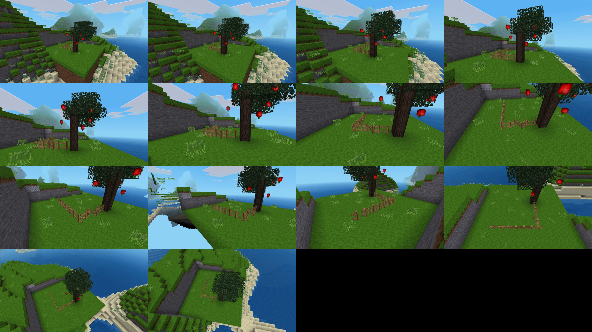
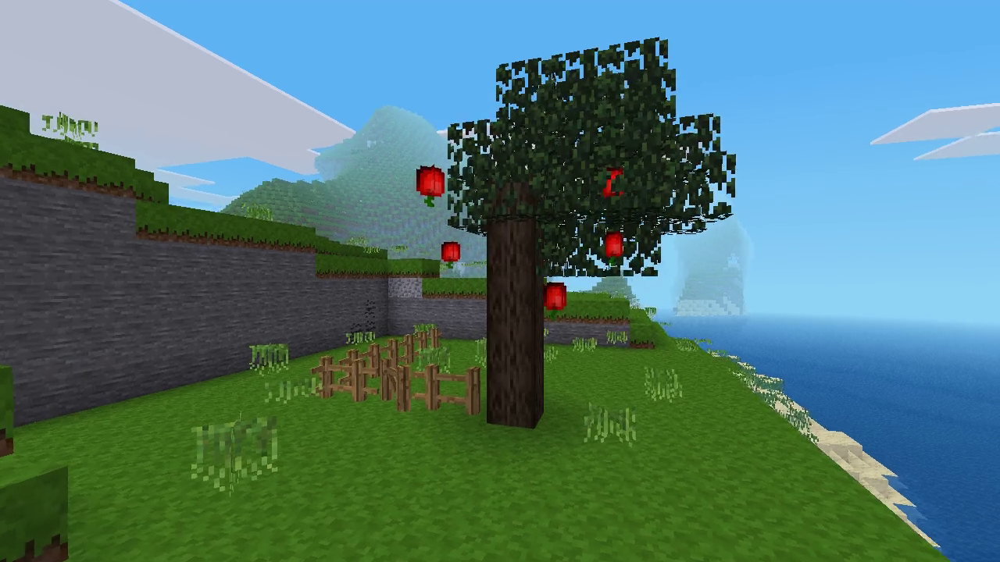
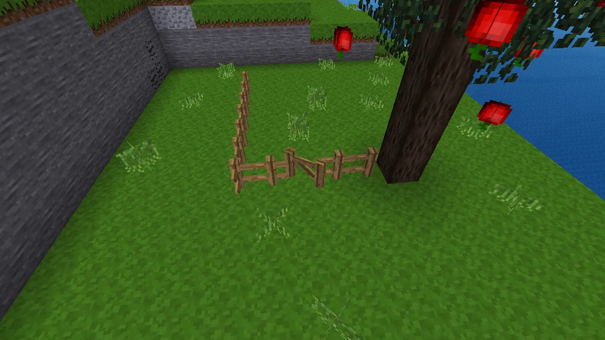
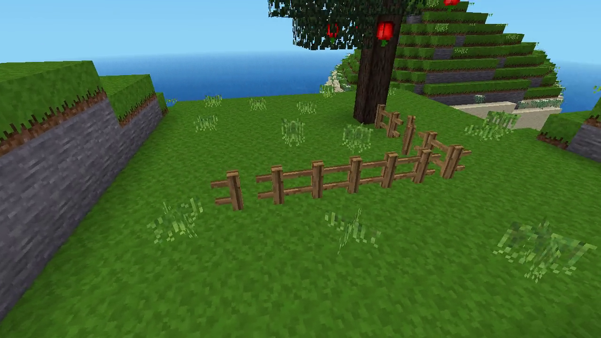

Eval: luanti_org__luanti_12536_mm
All 19 dimensions score 5. Local Docker runs on an image built from the delivered bundle: oracle 1.0 twice (JUnit and reward.json identical), nop 0.0 (f2p 0/5, p2p 7/7), and fix.patch applies at harbor_base. The bundle digest 465e1716 matches the Oracle, Nop and with-image locks. Trials meet Option A: 0/3 no-image and exactly 1/4 with-image (RskFEWC). A leave-one-out matrix over the golden's five parts shows each part fails exactly its own f2p and no p2p. Every f2p miss in the trials is a defect the agent never touched. Two passing trunk fixes written differently from the golden (RskFEWC, uYz5xBD) show the tests are behavioral. All five defects are visible in recording.mp4. Non-graded notes: stale wx template comments in test.sh; the test harness's clientFor() pointer trick; verifier network_mode could be no-network.
Scorecard
Every dimension in rubric order. Click a cell to see what is wrong (or the evidence, if it passed).
python -I py_compile of verifier.py passes; bash -n passes on test.sh and solve.sh. recording.mp4 decodes (ffprobe in the task image: h264 1280x720, 30 fps, 840 frames, 28.0 s). Extras: README.md and environment/bugs/bug_01..04.patch (injected bugs, applied and deleted in one RUN) are allowed.Tasks/ (capital T) with one task dir, and Trials/ with with_images/ (4 trials: DPzHGbP, RskFEWC, fubsbjX, kubUFJw) and without_images/ (3 trials: 9MbqzMq, Lc7htzB, uYz5xBD), for 7 trials (Option A). Oracle/, Nop/, Check/ and Analyze/ are also present. Each was packed into its own .tar.gz (Tasks.tar.gz 6.9 MB, Trials.tar.gz 42.7 MB, …) and extracts to the right top-level folder.- 'the objects placed on the terrace' (placed nodes) | 'not drawn where or how they were placed' (text) | 'renders in the position and orientation it was placed in' (text) | in-scene reference: 'the terrain and the tree's trunk are drawn exactly where they were placed' | which objects (canopy, fence end and corner, gate, apples and grass) and how much each is off | yes: four defects are position or orientation, and the fence/trunk gap is the fence's shape ('how').
All three rubric checks pass. The text names the element type and states the defect class and expected result, and the reference objects give context. It is not a stand-alone 'something doesn't render correctly'. Which instance is affected is left to the video, as the rubric allows ('which object … may be left to the image').
With-image trajectories: all four agents read the same symptom class (wrong placement or orientation of placed nodes). Each found 3 to 5 defects. 2/4 (kubUFJw, RskFEWC) identified the upside-down plants from the frames. DPzHGbP wrote 'The apples themselves are in the right place' (a position check only, a miss rather than taking the bug for intended behavior). No run said a defect was intended behavior.
visual_bug_fix ('Screenshot of a rendered defect | Perceive the defect, localize the responsible code across files, and fix it', Guidelines Step IV). The fix spans 4 source files.- recording.mp4 | bug_video | base-state render (checked against the nop behavior): 0:07 canopy offset up and to the side of the trunk, apples floating with stalks at the bottom; 0:15 gate diagonal across the fence line, gap between the last post and the trunk; 0:20 far end of the Z leg with a rail stub past the last post | neutral name; role and description say bug video, captured from this task's build | true (all claims in evidence_bundle 0:00–0:28 match the frames) | no (every agent treated it as the bug state).
f2p vs asset (steps 1–4):
1) testScaledAllfacesNodeOffset: allfaces, visual_scale 2, in-block (13,6,11). Video: leaves visual_scale 1.1 at in-block (13,9..13,13). Same drawAutoLightedCuboid scale path.
2) testFenceConnectsToTreeTrunk: fence between facedir trunks (param2 0 and 3) with no connect_sides. Video: default:tree (facedir, no connect_sides) at the fence end. Same nodeboxConnects branch.
3) testFenceRailsPointAtNeighborsAlongZ: fence with one neighbour on ±Z. Video: ends and corner of the north-running leg.
4) testPlantlikeNodeStandsUpright: plantlike with no wallmounted param2. Video: default:apple and grass tufts.
5) testRotatedMeshNodeFollowsFacedir: mesh node, facedir 1..23 (includes 2). Video: gate_wood_closed mesh at facedir 2.
Cross-check, leave-one-out in the task image (golden minus one part): minus canopy → only f2p 1 fails; minus trunk → only 2; minus rails → only 3; minus plant → only 4; minus gate → only 5; every p2p passes in all five. So fixing what the video shows passes each f2p, and each f2p grades only its pictured defect.
Step 7: all four injected bugs are pictured. A fix that skips one leaves a visible defect and fails its own f2p, so it is incomplete.
task_type = "visual_bug_fix" is one of the seven values. The evidence is one recording of a rendered defect (no before/after pair, no regression to tell apart), which fits visual_bug_fix. tags include multimodal, visual_bug_fix and the framework./app/.harbor_assets/recording.mp4. Dockerfile: COPY assets/recording.mp4 /app/.harbor_assets/. The file is present in the built image at that path.git apply --check /solution/fix.patch → FIX_APPLY_OK. solve.sh logs 'Applied fix.patch.' through git apply (no patch fallback) in both local oracle runs.diff --git lines are src/client/content_mapblock.cpp, src/client/mesh.cpp, src/mapnode.cpp and src/nodedef.cpp. files_edited is the same 4 paths, so the sets are equal. No test, doc, lockfile or changeset path. The test files (src/unittest/*) appear only in test.patch.Equivalence table: alternative | correct in repo? | test accepts
- Canopy: golden (add origin after scaling) | yes | yes. Scale about the node centre with texcoords from the local box (RskFEWC) | yes | yes (passed). (box−origin)·s+origin | yes | yes (same geometry).
- Trunk: golden (restore rot lookup inside connect_sides) | yes | yes. Add
connect_sides > 0 && to the hoisted test (RskFEWC) | yes | yes (passed). Generic facedir-rotation mapping of the connect face (uYz5xBD, 65 lines) | yes | yes (trunk and both connect_sides p2p passed). Nesting with param2 & 0x03 (fubsbjX) | plausible | yes (passed).- Rails: swap the front/back dirs (golden and all 7 trials) | yes | yes. Swapping which box list is drawn instead gives the same geometry, so it would be accepted too (reasoned, not run).
- Plant: golden (re-add NDT_PLANTLIKE in getWallMounted; same in kubUFJw, RskFEWC, Lc7htzB) | yes | yes. Defaulting to floor in the plantlike drawer for non-wallmounted plants gives the same vertices (reasoned).
- Gate:
*= M_PI/180 (golden, uYz5xBD) and core::degToRad (6 trials) | yes | yes. All 23 facedirs are compared against the node-box rotation code, so any correct conversion passes; EPS absorbs float error.Trial cross-check: every failed f2p in the 6 failing trials matches a defect that trial never edited (e.g. DPzHGbP and kubUFJw left nodedef.cpp untouched → trunk f2p; fubsbjX, DPzHGbP, 9MbqzMq and uYz5xBD left the plant path untouched). No trial wrote a valid alternative that the tests rejected.
The p2p guards reject shortcuts: ignoring the facedir rotation for connect_sides targets fails testFenceRespectsConnectSidesOfTurnedNode, and forcing every plant upright fails testWallmountedPlantlikeHangsFromCeiling.
cmake --build and the repo's own binary), so allowlist networking isn't needed. The oracle re-run in a fresh container gave identical JUnit (minus timings) and reward.json. The CB oracle matches as well (5/5, 7/7)..harbor_assets empty ('recording.mp4: No such file'). Run time: agent 2.3–6.0 min (informational).reward= are present in all runs, with no 'could not apply test.patch'. The CB Oracle (1.0, 5/5, 7/7) and Nop (0.0, 0/5, 7/7) agree and carry the same digest as the bundle.Delivery gate
Process checks run locally or read from the submitted runs. Each failure is scored under the dimension it belongs to, not as an extra dimension.
git apply --check /solution/fix.patch → FIX_APPLY_OK; /tests/test.patch → TEST_APPLY_OK; HEAD = harbor_base, 1 commit; /tmp/bugs absent; injected bugs present (radToDeg in mesh.cpp:271, NDT_PLANTLIKE missing in mapnode.cpp)reward= in every local and CB run; no 'could not apply test.patch'/app/.harbor_assets empty and 'recording.mp4: No such file' in all three trajectoriessha256:465e1716… = Oracle, Nop and all 4 with-image lock digests (task_manifest.json 'computed' matches too)sha256:4465d293…. Rebuilding the image-stripped copy with the runner's own strip code on Windows gives d58752f1… (not byte-identical, likely a platform difference in the stripped Dockerfile). Content checks pass: the instruction in the no-image trajectories is identical to the bundle's, assets are empty, and it is the same task id. Not a scoring issue.Trials
3 no-image runs (pass@3, all must fail) and 4 with-image runs (pass@4, exactly 1 must pass). Rewards come from each run's verifier/reward.txt.
| Trial | Mode | Reward | f2p | p2p | Min | Failed tests |
|---|---|---|---|---|---|---|
task_without_images__9MbqzMq | no-image | 0.0 | 3/5 | 7/7 | 5.1 | testFenceConnectsToTreeTrunk testPlantlikeNodeStandsUpright |
task_without_images__Lc7htzB | no-image | 0.0 | 3/5 | 7/7 | 6.3 | testFenceConnectsToTreeTrunk testFenceRailsPointAtNeighborsAlongZ |
task_without_images__uYz5xBD | no-image | 0.0 | 4/5 | 7/7 | 7.0 | testPlantlikeNodeStandsUpright |
task_with_images__DPzHGbP | with-image | 0.0 | 3/5 | 7/7 | 3.5 | testFenceConnectsToTreeTrunk testPlantlikeNodeStandsUpright |
task_with_images__RskFEWC | with-image | 1.0 | 5/5 | 7/7 | 3.8 | — |
task_with_images__fubsbjX | with-image | 0.0 | 4/5 | 7/7 | 4.0 | testPlantlikeNodeStandsUpright |
task_with_images__kubUFJw | with-image | 0.0 | 4/5 | 7/7 | 3.2 | testFenceConnectsToTreeTrunk |
Issues & suggested fixes
No issues found.
Dimension details
1. Structure – Task Bundle Files 5 · Pass
| Evidence | All 11 fixed files are present and non-empty: task.toml 5039 B, instruction.md 1076, evidence_bundle.json 2423, environment/Dockerfile 3926, environment/assets/ASSET_MANIFEST.json 547, solution/fix.patch 4375, solution/solve.sh 349, tests/config.json 843, tests/test.patch 24108, tests/test.sh 11643, tests/verifier.py 6701. The three JSON files parse; task.toml parses with tomllib; python -I py_compile of verifier.py passes; bash -n passes on test.sh and solve.sh. recording.mp4 decodes (ffprobe in the task image: h264 1280x720, 30 fps, 840 frames, 28.0 s). Extras: README.md and environment/bugs/bug_01..04.patch (injected bugs, applied and deleted in one RUN) are allowed. |
|---|---|
| What is wrong | Nothing found. |
| Suggested fix | None. |
2. Structure – Deliverables & Packaging 5 · Pass
| Evidence | Attempt3 has Tasks/ (capital T) with one task dir, and Trials/ with with_images/ (4 trials: DPzHGbP, RskFEWC, fubsbjX, kubUFJw) and without_images/ (3 trials: 9MbqzMq, Lc7htzB, uYz5xBD), for 7 trials (Option A). Oracle/, Nop/, Check/ and Analyze/ are also present. Each was packed into its own .tar.gz (Tasks.tar.gz 6.9 MB, Trials.tar.gz 42.7 MB, …) and extracts to the right top-level folder. |
|---|---|
| What is wrong | Nothing found. Note: Attempt3 holds folders, not archives. Upload each root folder as its own .tar.gz (the copies in QC_Review/11_15/luanti_org__luanti_12536_mm/ can be used directly). |
| Suggested fix | None. |
3. Instruction – Requires Visual Evidence 5 · Pass
| Evidence | Text alone: 'several of the objects placed on the terrace … are not drawn where or how they were placed … separate, independent defects, each affecting a different kind of object'. It names neither the objects (leaves, fence, gate, apples, grass) nor the defects (canopy drift, missing join to the trunk, mirrored Z rails, upside-down plants, twisted gate). A developer can't tell from the text which node kinds or which code paths to fix. The trials confirm it: 0/3 no-image runs solved it, and none found all five defects (they found 3, 3 and 4 by auditing code). With the video, kubUFJw cites 'the apples' stems point down' to find the plant defect. The image path resolves to /app/.harbor_assets/recording.mp4. No leak: no repo name, URL, file list, function name or mechanism. |
|---|---|
| What is wrong | Nothing found. Non-graded: each defect can be found on its own by a code audit (every defect was fixed by at least one no-image run). The video is what tells the agent which node kinds to check, and none of the no-image runs found all five. |
| Suggested fix | None. |
4. Instruction – Symptom Specificity 5 · Pass
| Evidence | Element | defect | expected | comparison | clue left to image | described correctly? - 'the objects placed on the terrace' (placed nodes) | 'not drawn where or how they were placed' (text) | 'renders in the position and orientation it was placed in' (text) | in-scene reference: 'the terrain and the tree's trunk are drawn exactly where they were placed' | which objects (canopy, fence end and corner, gate, apples and grass) and how much each is off | yes: four defects are position or orientation, and the fence/trunk gap is the fence's shape ('how'). All three rubric checks pass. The text names the element type and states the defect class and expected result, and the reference objects give context. It is not a stand-alone 'something doesn't render correctly'. Which instance is affected is left to the video, as the rubric allows ('which object … may be left to the image'). With-image trajectories: all four agents read the same symptom class (wrong placement or orientation of placed nodes). Each found 3 to 5 defects. 2/4 (kubUFJw, RskFEWC) identified the upside-down plants from the frames. DPzHGbP wrote 'The apples themselves are in the right place' (a position check only, a miss rather than taking the bug for intended behavior). No run said a defect was intended behavior. |
|---|---|
| What is wrong | Nothing found. Non-graded: 'where or how they were placed' covers the fence-to-trunk gap only loosely (that is the fence's shape, not its pose). 'drawn in the wrong position, orientation or shape' would describe all five more precisely. Changing instruction.md changes the checksum, so only make that change if you re-run every trial. |
| Suggested fix | None. |
5. Instruction – Task Type 5 · Pass
| Evidence | The text describes rendering defects (objects not drawn in the position or orientation they were placed in). That fits visual_bug_fix ('Screenshot of a rendered defect | Perceive the defect, localize the responsible code across files, and fix it', Guidelines Step IV). The fix spans 4 source files. |
|---|---|
| What is wrong | Nothing found. |
| Suggested fix | None. |
6. Image – Evidence Quality 5 · Pass
| Evidence | Naming table: file | role | what the frames show | claims | true? | agents confused? - recording.mp4 | bug_video | base-state render (checked against the nop behavior): 0:07 canopy offset up and to the side of the trunk, apples floating with stalks at the bottom; 0:15 gate diagonal across the fence line, gap between the last post and the trunk; 0:20 far end of the Z leg with a rail stub past the last post | neutral name; role and description say bug video, captured from this task's build | true (all claims in evidence_bundle 0:00–0:28 match the frames) | no (every agent treated it as the bug state). f2p vs asset (steps 1–4): 1) testScaledAllfacesNodeOffset: allfaces, visual_scale 2, in-block (13,6,11). Video: leaves visual_scale 1.1 at in-block (13,9..13,13). Same drawAutoLightedCuboid scale path. 2) testFenceConnectsToTreeTrunk: fence between facedir trunks (param2 0 and 3) with no connect_sides. Video: default:tree (facedir, no connect_sides) at the fence end. Same nodeboxConnects branch. 3) testFenceRailsPointAtNeighborsAlongZ: fence with one neighbour on ±Z. Video: ends and corner of the north-running leg. 4) testPlantlikeNodeStandsUpright: plantlike with no wallmounted param2. Video: default:apple and grass tufts. 5) testRotatedMeshNodeFollowsFacedir: mesh node, facedir 1..23 (includes 2). Video: gate_wood_closed mesh at facedir 2. Cross-check, leave-one-out in the task image (golden minus one part): minus canopy → only f2p 1 fails; minus trunk → only 2; minus rails → only 3; minus plant → only 4; minus gate → only 5; every p2p passes in all five. So fixing what the video shows passes each f2p, and each f2p grades only its pictured defect. Step 7: all four injected bugs are pictured. A fix that skips one leaves a visible defect and fails its own f2p, so it is incomplete. |
|---|---|
| What is wrong | Nothing found. |
| Suggested fix | None. |
7. Metadata – task_type 5 · Pass
| Evidence | task_type = "visual_bug_fix" is one of the seven values. The evidence is one recording of a rendered defect (no before/after pair, no regression to tell apart), which fits visual_bug_fix. tags include multimodal, visual_bug_fix and the framework. |
|---|---|
| What is wrong | Nothing found. |
| Suggested fix | None. |
8. Evidence – Chain Consistency 5 · Pass
| Evidence | Disk: environment/assets/recording.mp4, 6,858,126 B, sha256 7c9067c51ead…0c52. ASSET_MANIFEST.json: same file, bytes and sha256; container_path /app/.harbor_assets/recording.mp4. evidence_bundle.json: same file, bytes and sha256; local_path and container_path /app/.harbor_assets/recording.mp4. instruction.md: /app/.harbor_assets/recording.mp4. Dockerfile: COPY assets/recording.mp4 /app/.harbor_assets/. The file is present in the built image at that path. |
|---|---|
| What is wrong | Nothing found. |
| Suggested fix | None. |
9. Golden Fix – Applies Cleanly 5 · Pass
| Evidence | In the image built from the bundle (HEAD tagged harbor_base): git apply --check /solution/fix.patch → FIX_APPLY_OK. solve.sh logs 'Applied fix.patch.' through git apply (no patch fallback) in both local oracle runs. |
|---|---|
| What is wrong | Nothing found. |
| Suggested fix | None. |
10. Golden Fix – Source-Only Scope 5 · Pass
| Evidence | Paths in the fix.patch diff --git lines are src/client/content_mapblock.cpp, src/client/mesh.cpp, src/mapnode.cpp and src/nodedef.cpp. files_edited is the same 4 paths, so the sets are equal. No test, doc, lockfile or changeset path. The test files (src/unittest/*) appear only in test.patch. |
|---|---|
| What is wrong | Nothing found. |
| Suggested fix | None. |
11. Tests – Implementation Overfit 5 · Pass
| Evidence | All assertions compare generated geometry: vertex-extent boxes, with EPS 0.05 world units (0.5% of a node), plus texture-V orientation for plants. There are no string, enum or format comparisons and no exact vertex counts (only count > 0). Expected boxes come from independent sources (node position × BS, or the node's own getNodeBoxes() for the mesh test), not from the golden. Equivalence table: alternative | correct in repo? | test accepts - Canopy: golden (add origin after scaling) | yes | yes. Scale about the node centre with texcoords from the local box (RskFEWC) | yes | yes (passed). (box−origin)·s+origin | yes | yes (same geometry). - Trunk: golden (restore rot lookup inside connect_sides) | yes | yes. Add connect_sides > 0 && to the hoisted test (RskFEWC) | yes | yes (passed). Generic facedir-rotation mapping of the connect face (uYz5xBD, 65 lines) | yes | yes (trunk and both connect_sides p2p passed). Nesting with param2 & 0x03 (fubsbjX) | plausible | yes (passed).- Rails: swap the front/back dirs (golden and all 7 trials) | yes | yes. Swapping which box list is drawn instead gives the same geometry, so it would be accepted too (reasoned, not run). - Plant: golden (re-add NDT_PLANTLIKE in getWallMounted; same in kubUFJw, RskFEWC, Lc7htzB) | yes | yes. Defaulting to floor in the plantlike drawer for non-wallmounted plants gives the same vertices (reasoned). - Gate: *= M_PI/180 (golden, uYz5xBD) and core::degToRad (6 trials) | yes | yes. All 23 facedirs are compared against the node-box rotation code, so any correct conversion passes; EPS absorbs float error.Trial cross-check: every failed f2p in the 6 failing trials matches a defect that trial never edited (e.g. DPzHGbP and kubUFJw left nodedef.cpp untouched → trunk f2p; fubsbjX, DPzHGbP, 9MbqzMq and uYz5xBD left the plant path untouched). No trial wrote a valid alternative that the tests rejected. The p2p guards reject shortcuts: ignoring the facedir rotation for connect_sides targets fails testFenceRespectsConnectSidesOfTurnedNode, and forcing every plant upright fails testWallmountedPlantlikeHangsFromCeiling. |
|---|---|
| What is wrong | Nothing found. |
| Suggested fix | None. |
12. Tests – f2p/p2p Identifier Validity 5 · Pass
| Evidence | task.toml f2p (5) and p2p (7) equal tests/config.json exactly, in the same order. In the local oracle JUnit (256 testcases), each of the 12 ids matches exactly one testcase (classname TestMapblockMeshGenerator), both as an exact match and under verifier.py's endswith fallback (1 hit each). The names match the TEST() calls in test_content_mapblock.cpp. |
|---|---|
| What is wrong | Nothing found. |
| Suggested fix | None. |
13. Tests – p2p Classification 5 · Pass
| Evidence | All 7 p2p pass on local nop (7/7), local oracle (7/7) and the oracle re-run (7/7), as in the CB's Nop and Oracle runs. They also pass in every with-image and no-image trial and in all 5 leave-one-out variants. |
|---|---|
| What is wrong | Nothing found. |
| Suggested fix | None. |
14. Tests – Discriminating (f2p) 5 · Pass
| Evidence | Local nop: all 5 f2p fail, each with a geometry message (e.g. 'scaled allfaces node at (13, 6, 11) is not centred on itself…'). Local oracle: 5/5 pass. The leave-one-out matrix shows each f2p fails only on its own unfixed defect. |
|---|---|
| What is wrong | Nothing found. |
| Suggested fix | None. |
15. Tests – Determinism 5 · Pass
| Evidence | The tests are headless, CPU-only mesh generation over a synthetic 3x3x3-block voxel area: no timers, animation, rendering, fonts or network. Floats use tolerance EPS = 0.05. test.sh installs nothing at test time (it only runs cmake --build and the repo's own binary), so allowlist networking isn't needed. The oracle re-run in a fresh container gave identical JUnit (minus timings) and reward.json. The CB oracle matches as well (5/5, 7/7). |
|---|---|
| What is wrong | Nothing found. Non-graded: clientFor() builds a fake Client* by offset arithmetic over uninitialised storage. It is deterministic because Client→IGameDef is a non-virtual base and only ndef() is called, but it is fragile if Client's layout changes. [verifier] network_mode could be 'no-network', since nothing is fetched. |
| Suggested fix | None. |
16. Hardening – Difficulty (Model Trial Fails) 5 · Pass
| Evidence | Option A (7 trials). No-image: 9MbqzMq 0.0, Lc7htzB 0.0, uYz5xBD 0.0 → 0/3. With-image: DPzHGbP 0.0, RskFEWC 1.0, fubsbjX 0.0, kubUFJw 0.0 → exactly 1/4. The modes are told apart by lock task path (task_with_images vs task_without_images) and digest (465e1716 vs 4465d293). The no-image trajectories show .harbor_assets empty ('recording.mp4: No such file'). Run time: agent 2.3–6.0 min (informational). |
|---|---|
| What is wrong | Nothing found. |
| Suggested fix | None. |
17. Hardening – Real & Feasible 5 · Pass
| Evidence | Base defect: upstream issue #12536 (visual_scale leaves offset from the trunk), fixed by PR 12558 (translate after scaling). The four injected regressions are each a plausible real-world slip: hoisting the facedir rot lookup out of the connect_sides branch (bug_01), swapped front/back probe vectors (bug_02), dropping NDT_PLANTLIKE from getWallMounted (bug_03), and radToDeg for degToRad (bug_04). Each fix is the one-line or one-block change a real developer would write. All five defects are pictured in the video and each is fixable from it (RskFEWC fixed all five; kubUFJw fixed the plant defect from the frames). |
|---|---|
| What is wrong | Nothing found. |
| Suggested fix | None. |
18. Gate – Oracle/Nop 5 · Pass
| Evidence | Local oracle = 1.0, local nop = 0.0, oracle re-run = 1.0 and identical. Stage banners and reward= are present in all runs, with no 'could not apply test.patch'. The CB Oracle (1.0, 5/5, 7/7) and Nop (0.0, 0/5, 7/7) agree and carry the same digest as the bundle. |
|---|---|
| What is wrong | Nothing found. |
| Suggested fix | None. |
19. Unauditable 5 · Pass
| Evidence | The bundle is complete and auditable: every archive extracted, the image built, and all runs were reproduced locally. |
|---|---|
| What is wrong | Nothing found. |
| Suggested fix | None. |
Visual evidence



